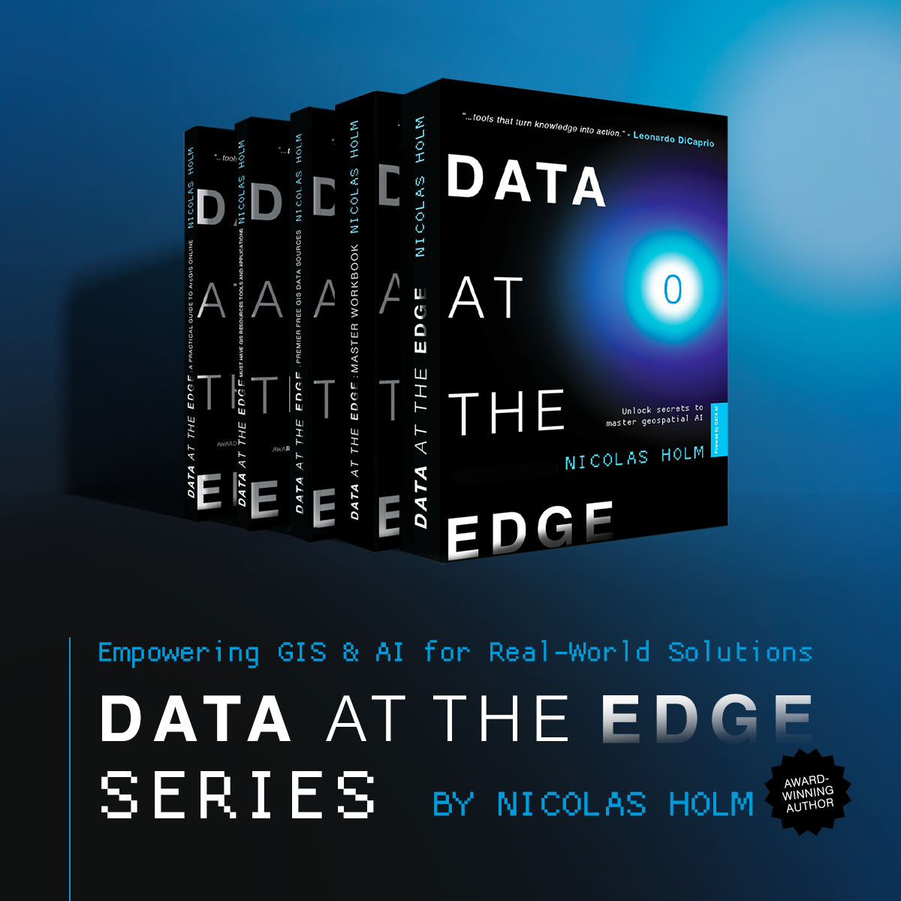

Reflective Alignment Architecture & Reflective Duality Layer
Core framework paper describing reflective stability and the RDL measurement layer.
The books establish the field experience. The papers define the theory. The public records preserve the research trail. The essays carry the human argument.
Four public-facing starting points: the core theory, a compact alignment book, the Data at the Edge series, and the ethical foundation behind the work.
Core framework paper describing reflective stability and the RDL measurement layer.
A plain-language book on how AI intelligence stays stable while it grows. A dedicated online reader will be added as a separate page.
Five-book series on geospatial AI, trusted data, edge intelligence, and real-world data systems.
Public essay on care, ethical coevolution, and the human responsibility behind alignment work.
A five-book series on geospatial AI, trusted data, and edge intelligence.

The Data at the Edge series anchors the lab’s practical foundation: GIS, trusted data, AI workflows, edge systems, and public-facing knowledge infrastructure.
Comprehensive guide to mastering geospatial artificial intelligence and edge computing.
Practical workbook and companion exercises for the Data at the Edge curriculum.
A practical guide to implementing edge data strategies using ArcGIS.
A curated collection of premier sources and reference materials.
The main research outputs defining reflective alignment, reflective duality, moral coherence, education applications, and care as a stabilizing concept.
Core framework paper describing reflective stability and the RDL measurement layer.
Plain-language book on how AI intelligence stays stable while it grows.
SSRN preprint applying the 5R framework to education contexts.
SSRN preprint on care as a stabilizing parameter for moral coherence.
Timestamped records, repositories, preprints, model cards, and supporting materials connected to the lab’s research outputs.
Immutable timestamp for public verification. DOI: 10.5281/zenodo.17665613.
Measurement layer extension timestamp. DOI: 10.5281/zenodo.17664094.
Alignment failure modes dataset timestamp. DOI: 10.5281/zenodo.17575613.
Public project hosting the core archival version of the RAA/RDL framework.
Repository for diagrams, figures, and supplementary materials associated with RAA v1.1.
Scientific framework for measuring moral coherence in AI systems.
Canonical public repository for code, artifacts, and record integrity.
Model card and dataset entry point.
Public-facing essays and forum writing on care, coevolution, alignment, and the human responsibility behind intelligent systems.
Public post summarizing the framework and positioning.
A Covenant for Ethical Coevolution.
Perspectives on AI development.
Public announcements and external mentions connected to published work.
Announcement connected to the Data at the Edge five-book series and its public release.
A searchable archive of the books, research outputs, public records, essays, press, and supporting artifacts listed above.
Use Zenodo DOIs where available. For other items, cite the linked public record, canonical PDF, repository, or publication page.